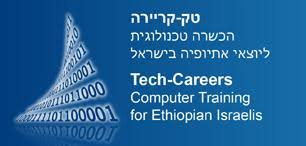

 טק-קריירה מציעה לצעירים וצעירות יוצאי אתיופיה תכנית ייחודית משולבת וחדשנית, המעניקה למשתתפים הזדמנות אמיתית לרכישת ידע, ניסיון וכישורים הדרושים על מנת להשתלב בתעשיית ההיי-טק הישראלית, לפתח קריירה איכותית ולעבור לעצמאות כלכלית. התוכנית כוללת הכשרה טכנולוגית איכותית, סדנאות העשרה לפיתוח אישי ושירותי השמה בעולם ההיי-טק. מאז הקמתה, הוכשרו בטק-קריירה כ-650 צעירים וצעירות בתחומי תוכנה ותקשורת נתונים. אחוזי ההשמה של הבוגרים בתחומי הכשרתם עולים בהתמדה ועומדים כיום על 89%. החל משנת 2010, טק-קריירה מוכרת כ- IT Academy של Microsoft והכשרותיה מוכרות על-ידי משרד התמ"ת. טק-קריירה פועלת בשותפויות תלת-מגזריות עם גורמים מגוונים, ביניהם: משרדי ממשלה, חברות עסקיות, מלכ"רים מקבילים, תורמים פרטיים, קרנות ופדרציות יהודיות בישראל ובעולם. לטק-קריירה ועד מנהל וחבר נאמנים המונים בכירים במגזר העסקי ואנשי חברה בולטים, התורמים מניסיונם וממרצם, בהתנדבות, לקידום מטרות הארגון. העמותה מפעילה מרכז להכשרה במקצועות ההיי-טק (Microsoft IT Academy) בעיר לוד הכולל מעבדות מחשבים מתקדמות.